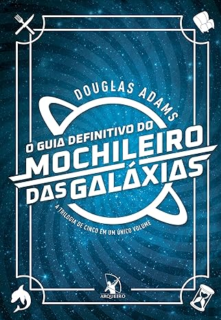

Comédia
A seção Comédia apresenta uma seleção de livros divertidos, cheios de humor e ironia, que prometem arrancar boas risadas dos leitores.
-
O Guia do Mochileiro das Galáxias - Douglas Adams

Uma narrativa absurdamente engraçada sobre a viagem de Arthur Dent pelo espaço, após a Terra ser destruída, com humor irreverente e situações inusitadas.
-
Um Conto de Natal - Charles Dickens

A famosa história de Ebenezer Scrooge, um homem avarento que, após ser visitado por três fantasmas, redescobre o verdadeiro espírito do Natal.
-
Memórias Póstumas de Brás Cubas - Machado de Assis

O narrador, já falecido, conta a história de sua vida com um tom de sarcasmo e crítica social, abordando temas como o amor, a morte e a hipocrisia.
-
O Diário de Bridget Jones - Helen Fielding

A hilária narrativa de Bridget Jones, uma mulher solteira e desajeitada, que compartilha suas experiências de vida, amor e trabalho com muito humor e autocrítica.
-
Os Delírios de Consumo de Becky Bloom - Sophie Kinsella

A história de Becky Bloom, uma consumista compulsiva que vive aventuras e desventuras ao tentar equilibrar sua vida financeira com sua paixão por compras.
-
Good Omens - Neil Gaiman e Terry Pratchett

Uma comédia satírica sobre o apocalipse, onde um anjo e um demônio, que haviam se acostumado com a Terra, tentam impedir o fim do mundo, mas de maneira muito peculiar.
-
Meu Pé de Laranja Lima - José Mauro de Vasconcelos

Embora trate de temas emocionais, o livro é repleto de momentos cômicos e tocantes, acompanhando a história de Zezé, um menino com uma imaginação fértil e cheia de humor.
-
Aventuras de Alice no País das Maravilhas - Lewis Carroll

Alice se aventura em um mundo fantástico cheio de personagens excêntricos e situações hilárias, misturando lógica e nonsense com muito humor.
-
As Crônicas de Nárnia - C.S. Lewis
Embora seja uma obra de fantasia, "Nárnia" tem elementos cômicos e personagens com características engraçadas que tornam a leitura leve e divertida.
-
Três Homens em um Barco - Jerome K. Jerome

Uma comédia britânica clássica sobre as desventuras de três amigos que decidem fazer uma viagem de barco pelo rio Tamisa, repleta de situações engraçadas e absurdas.